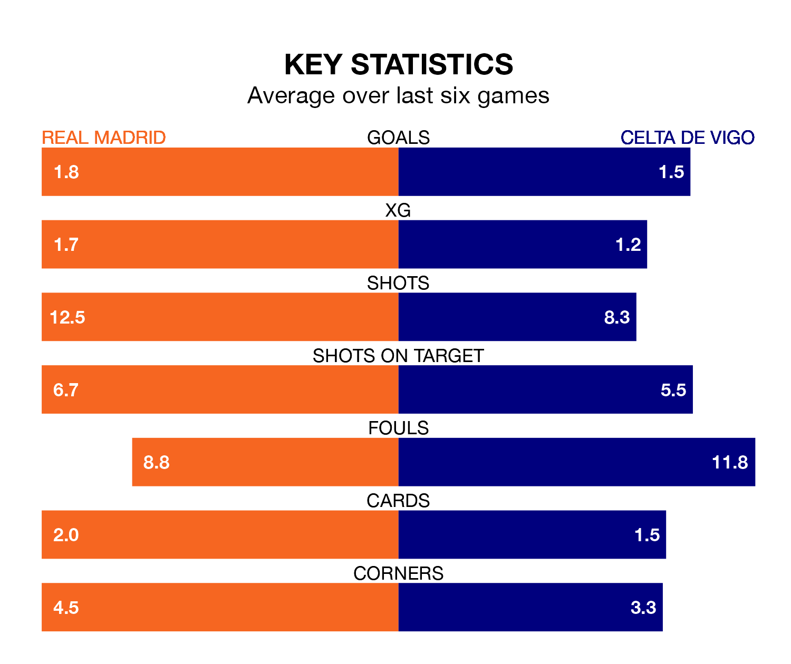

Real Madrid host Celta de Vigo in Sunday's late match at the Estadio Santiago Bernabéu looking to bounce back from defeat last time out in La Liga.
Madrid, who sit top of the league after 27 games, fell to a 2-2 away defeat to Valencia CF on March 2.
They face a Celta side who picked up a win in their last match, a 1-0 victory against Almería, and who sit 17th in the table.
With 56 goals in 27 games so far this season, Madrid are the league's joint-second-highest scorers with 2.1 goals per game. And they are conceding fewer than average, letting in 18 goals at a rate of 0.7 per game.
Celta, meanwhile, are below average scorers, with 1.1 goals per game, compared to a league average of 1.3. They have conceded 1.4 goals per game.
In Jude Bellingham, the hosts have the league's sharpest shooter so far this season. He has notched 16 goals in 22 appearances.
His goal rate of one every 117 minutes is much quicker than that of Jørgen Strand Larsen, the away team's top scorer with a goal every 240 minutes, and a total of nine goals in 27 games.
In the last 10 years, Madrid and Celta have played each other on 22 occasions. Madrid won 17 of them, Celta two, and they drew three times.
On average, Madrid scored 2.9 goals and Celta 1.1 in those matches.
Their last meeting was on August 25, when Madrid won 1-0 away.
Madrid are in reasonable form in La Liga, with three wins and three draws from their last six games.
With two wins and a draw over that period, Celta's form is worse – they have taken seven points from 18, compared to Madrid's 12.
Sunday's match will be refereed by Mario Melero López, who has taken charge of 10 La Liga games so far this season, issuing one red card and booking 38 players. He has awarded one penalty.
The last Madrid game Melero López refereed was a 2-1 home win against Getafe CF on September 2. His last Celta match was their 1-0 loss at home against Girona on January 28.
Updated: 09:34 (UTC), 08/03/24